Capire un rapporto da come ci si scrive
Bloom prende una chat esportata da WhatsApp e la trasforma in una lettura del rapporto: quanto è caldo il tono, chi cerca e chi risponde, quali temi tornano, come sono cambiate le cose nel tempo.
Funziona per ogni tipo di legame (coppia, amici, famiglia, lavoro) e anche per le chat di gruppo. Riconosce da sola di che legame si tratta e usa le parole adatte; la scelta finale resta sempre a chi la usa.
Understanding a relationship from how you write to each other
Bloom takes a chat exported from WhatsApp and turns it into a reading of the relationship: how warm the tone is, who reaches out and who replies, which themes come back, how things have changed over time.
It works for every kind of bond (couple, friends, family, work) and for group chats too. It recognises the kind of bond on its own and uses fitting words; the final choice always stays with the user.
Com'è fatta
What it looks like
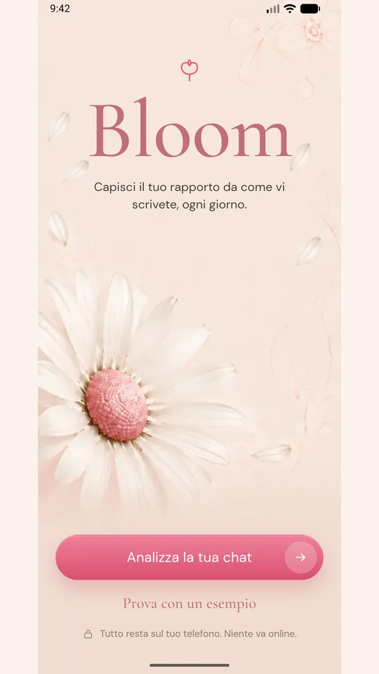
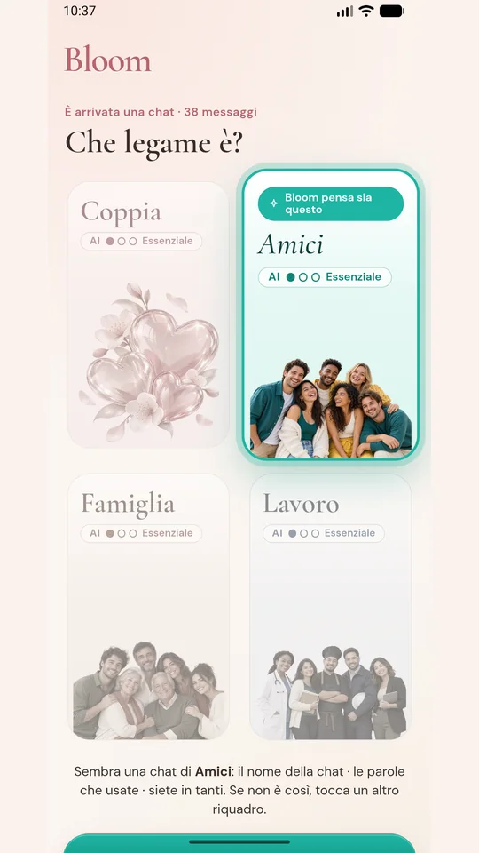
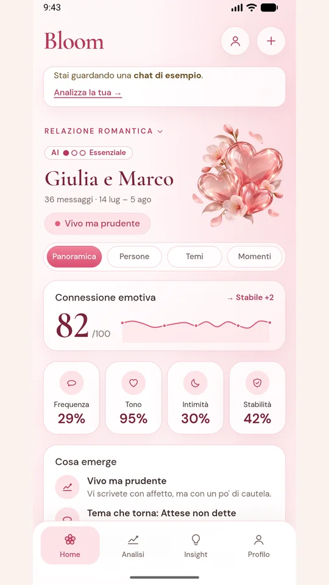
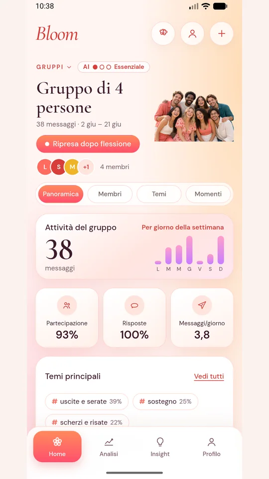
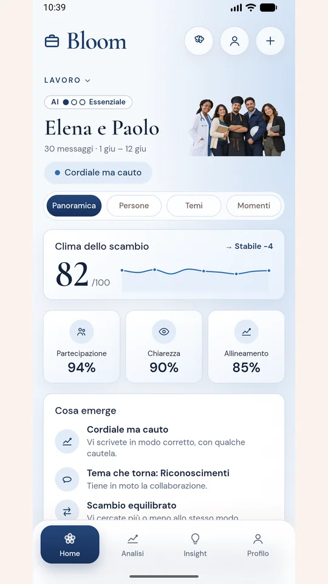
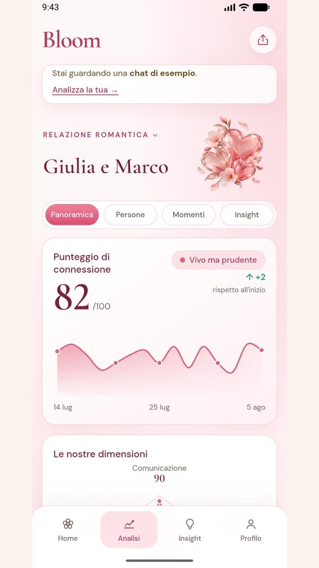
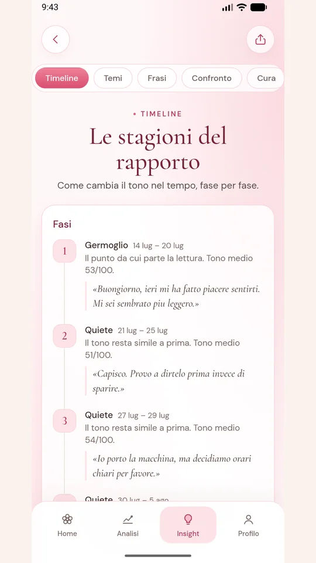
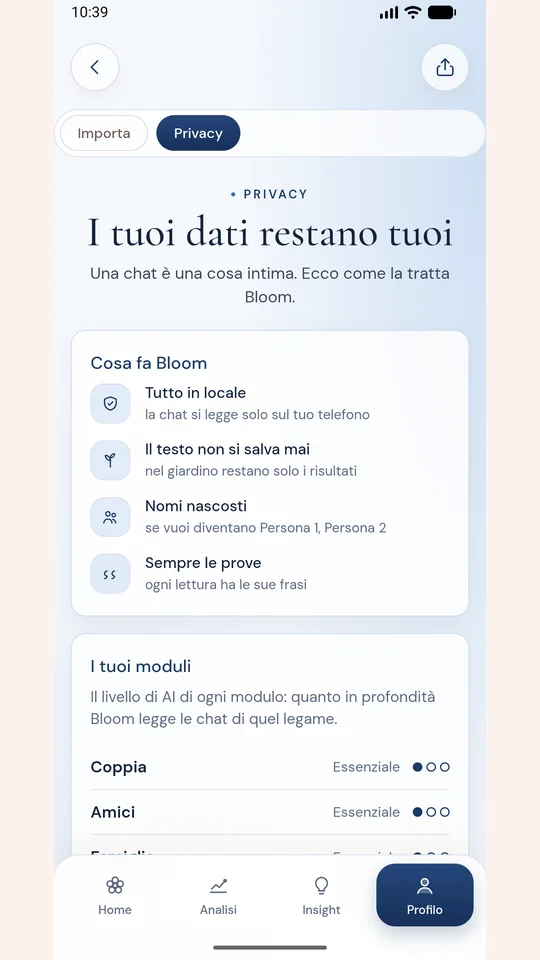
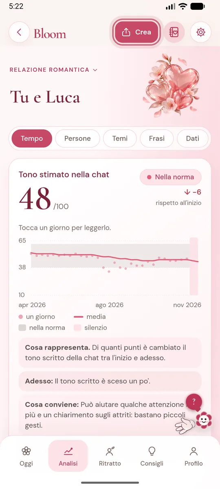
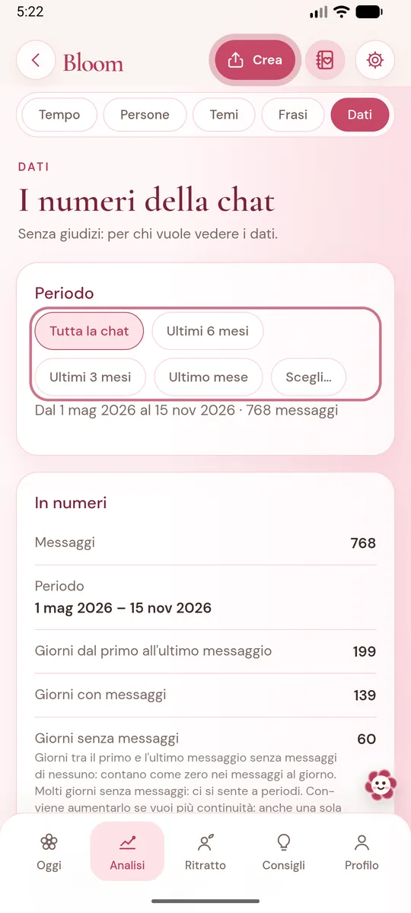
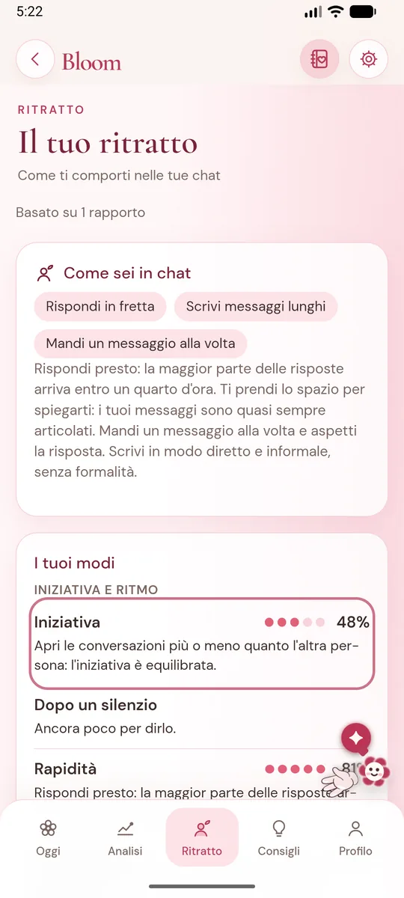
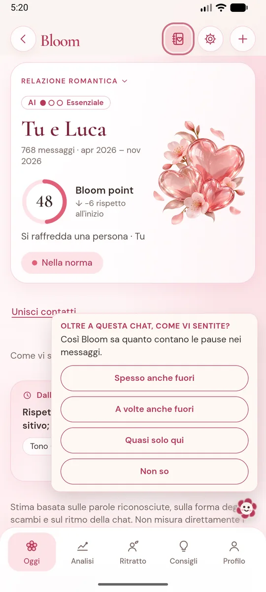
Schermate realizzate con chat inventate: nomi e frasi non appartengono a persone reali.
Screens made with invented chats: names and sentences do not belong to real people.
Tre passaggi, pochi secondi
- Esporta la chat. In WhatsApp si apre la conversazione, si tocca «Esporta chat», «Senza media» e si sceglie Bloom. Nella versione web si carica il file .zip o .txt.
- Conferma il legame. Bloom riconosce se è una chat di coppia, tra amici, in famiglia o di lavoro e spiega da cosa lo ha capito. Si può sempre cambiare.
- Leggi il risultato. Punteggio e andamento, persone, temi, timeline, proposte per prendersi cura del rapporto. Per chi vuole, una card da condividere: solo numeri ed etichette, mai nomi né frasi.
Three steps, a few seconds
- Export the chat. In WhatsApp open the conversation, tap “Export chat”, “Without media” and choose Bloom. On the web version you upload the .zip or .txt file.
- Confirm the bond. Bloom recognises whether it is a couple, friends, family or work chat and explains what gave it away. You can always change it.
- Read the result. Score and trend, people, themes, timeline, suggestions for taking care of the relationship. If you like, a card to share: numbers and labels only, never names or sentences.
La lettura, pezzo per pezzo
The reading, piece by piece
La margherita: un aiuto che impara quando farsi da parte
La margherita è la guida di Bloom: compare in un angolo, saluta con la mano e mostra un fumetto con un consiglio, una domanda o un avviso. Non è un assistente che chiacchiera: ogni cosa che dice è un testo scritto in anticipo, scelto da regole. Non c'è nessun modello linguistico e nulla esce dal telefono.
La sua «intelligenza» sta nel capire quando parlare. Qui sotto, come ragiona.
The daisy: a helper that learns when to step aside
The daisy is Bloom's guide: it appears in a corner, waves and shows a speech bubble with a tip, a question or a warning. It is not a chatty assistant: everything it says is text written in advance and picked by rules. There is no language model and nothing leaves the phone.
Its “intelligence” lies in knowing when to speak. Here is how it reasons.
La chat resta sul telefono
Una chat è una cosa intima, e Bloom è costruita partendo da qui. L'analisi avviene per intero sul dispositivo: l'app Android non ha nemmeno il permesso di accedere a Internet.
- 01Tutto in locale. Nessun server riceve la conversazione.
- 02Il testo non si salva mai. Si possono conservare solo i risultati: punteggi, etichette, andamento.
- 03Nomi nascosti, se vuoi. Diventano «Persona 1», «Persona 2».
- 04Nessun account, nessuna pubblicità. Con un tocco si cancella tutto.
The chat stays on the phone
A chat is an intimate thing, and Bloom is built starting from that. The whole analysis runs on the device: the Android app does not even have permission to access the Internet.
- 01Everything local. No server receives the conversation.
- 02The text is never saved. Only results can be kept: scores, labels, trend.
- 03Hidden names, if you wish. They become “Person 1”, “Person 2”.
- 04No account, no ads. One tap deletes everything.
Un motore deterministico, non un'AI che improvvisa
I punteggi vengono da un motore a regole: la stessa chat dà sempre lo stesso risultato, e ogni segnale è riconducibile a ciò che lo ha prodotto. Il motore di riferimento è scritto in Python; quello che gira nell'app è la sua versione JavaScript, e una serie di test verifica che i due diano lo stesso output.
L'intelligenza artificiale è prevista solo come modulo facoltativo e solo sul dispositivo, a tre livelli:
A deterministic engine, not an AI making things up
Scores come from a rule-based engine: the same chat always gives the same result, and every signal can be traced back to what produced it. The reference engine is written in Python; the one running in the app is its JavaScript version, and a test suite checks that the two produce the same output.
Artificial intelligence is planned only as an optional module, and only on the device, at three levels:
Essenziale e Approfondito: cosa fanno davvero
Una precisazione importante: il livello Essenziale non usa reti neurali. È un motore a regole, ed è proprio questo il suo punto di forza. La rete neurale c'è solo nell'Approfondito.
Come è stato addestrato. Non su chat di persone: su frasi sintetiche. Due modelli linguistici locali sul PC, qwen3.5:4b e qwen3:8b, hanno scritto e poi riletto circa 12.300 frasi inventate; 11.746 hanno ricevuto un'etichetta. Il lettore impara solo dalle 8.447 su cui chi le ha scritte e chi le ha rilette sono d'accordo, con 85 frasi di rinforzo scritte a mano (rifiuti secchi come cautela; logistica e cortesia di rito come neutre). Le soglie sono prudenti: meglio perdere un segnale che inventarne uno.
Quanto è meglio degli elenchi. Misurato su frasi mai viste in addestramento, il punteggio F1 medio (da 0 a 1: tiene conto di quanti segnali trova e di quanti ne sbaglia) sale da 0,26-0,38 degli elenchi di parole a 0,59-0,72 del lettore, a seconda del legame (0,59 per la coppia, 0,72 per il lavoro). Sulle frasi neutre il lettore inventa meno falsi segnali: per la coppia 10 su 59, contro 13 degli elenchi.
I limiti, detti chiaramente. Questi numeri misurano quanto il lettore imita l'insegnante, non un giudizio umano. Resta il motore a regole l'autorità su punteggi ed evidenze: il lettore si limita ad aggiungere segnali. L'Approfondito è costruito e provato su emulatore e non è ancora nella versione distribuita su Google Play.
Essential and In-depth: what they really do
An important clarification: the Essential level does not use neural networks. It is a rule-based engine, and that is precisely its strength. The neural network is only in the In-depth level.
How it was trained. Not on people's chats: on synthetic sentences. Two local language models on the PC, qwen3.5:4b and qwen3:8b, wrote and then re-read about 12,300 invented sentences; 11,746 received a label. The reader learns only from the 8,447 where the writer and the re-reader agree, plus 85 hand-written reinforcement sentences (blunt refusals as caution; logistics and routine politeness as neutral). Thresholds are cautious: better to miss a signal than to invent one.
How much better than the lists. Measured on sentences never seen in training, the average F1 score (from 0 to 1: it accounts for how many signals it finds and how many it gets wrong) rises from 0.26-0.38 for word lists to 0.59-0.72 for the reader, depending on the bond (0.59 for couples, 0.72 for work). On neutral sentences the reader invents fewer false signals: for couples 10 out of 59, against 13 for the lists.
The limits, stated plainly. These numbers measure how well the reader imitates the teacher, not a human judgement. The rule-based engine remains the authority on scores and evidence: the reader only adds signals. In-depth is built and tried on an emulator and is not yet in the version distributed on Google Play.
Disponibile su Google Play
Bloom è online per tutti: l'app Android si scarica da Google Play con il nome «Bloom: capisci la vostra chat», gratis e senza pubblicità. Per chi non ha un telefono Android resta la versione web.
Ultimo aggiornamento, 23 novembre 2026. Arriva Ritratto, la quinta voce della barra in basso: 18 parametri in cinque gruppi che descrivono come ci si comporta nelle proprie chat, con una descrizione a cinque gradi, il margine di incertezza e l'andamento nel tempo. Nella scheda Dati si sceglie il periodo da guardare e compaiono i dettagli del rapporto, 14 misure in parole concrete. Le soglie dei gradi sono ancora stime, da leggere come tendenze.
13 novembre 2026. I suggerimenti si adattano e calano man mano che si impara a usare l'app (si regolano da Profilo, Aiuto) e tacciono nei momenti delicati; «Crea immagine» è in evidenza nella pagina di analisi e le immagini si possono salvare in galleria.
7 novembre 2026. La lettura distingue com'è il rapporto adesso da com'è stato nel complesso; il grafico segue il calendario e mostra anche i giorni di silenzio; una nuova sezione legge i silenzi (annunciati, dopo una lite, senza risposta) e, per coppia e famiglia, chiede se vi vedete spesso di persona, così una pausa nella chat non sembra distanza.
Available on Google Play
Bloom is online for everyone: the Android app can be downloaded from Google Play as “Bloom: capisci la vostra chat”, free and with no ads. The web version remains for anyone without an Android phone.
Latest update, November 23, 2026. Portrait arrives, the fifth item on the bottom bar: 18 parameters in five groups describing how you behave in your own chats, with a five-step description, a margin of uncertainty and a trend over time. In the Data tab you choose the period to look at and the relationship details appear, 14 measures in concrete words. The thresholds for the steps are still estimates, to be read as tendencies.
November 13, 2026. Hints adapt and fade as you learn the app (set them under Profile, Help) and stay quiet at delicate moments; Create image is prominent on the analysis page and images can be saved to the gallery.
November 7, 2026. The reading separates how the relationship is now from how it has been overall; the chart follows the calendar and also shows days of silence; a new section reads silences (announced, after an argument, unanswered) and, for couples and families, asks whether you see each other often in person, so a pause in the chat does not look like distance.
The app and its pages are in Italian.